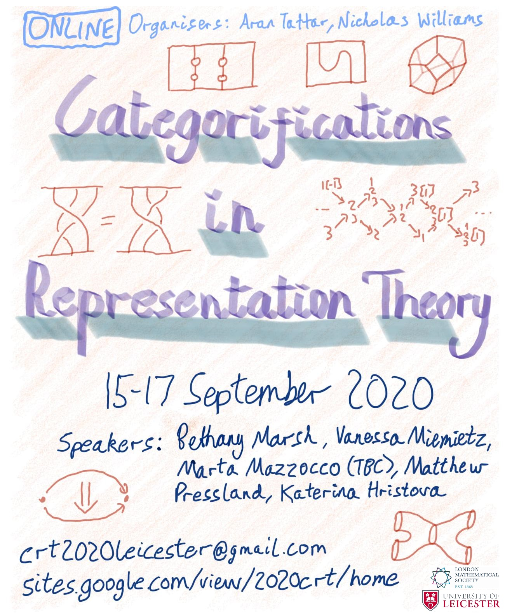

https://orcid.org/0000-0001-8478-4719
https://orcid.org/0000-0001-8478-4719
School of Mathematics and Actuarial Science, University of Leicester, University Road, Leicester, LE1 7RH
I am a PhD student in Mathematics at the University of Leicester. My supervisor is Sibylle Schroll.
My research concerns higher-dimensional phenomena in the representation theory of algebras and in combinatorics. I am particularly interested in higher Auslander–Reiten theory, the higher Stasheff–Tamari orders, and the higher Bruhat orders.
You can find a copy of my CV here (updated 11/2/21).
GitHub, ResearchGate, Google Scholar
12/2020 The first higher Stasheff–Tamari orders are quotients of the higher Bruhat orders, arXiv
07/2020 New interpretations of the higher Stasheff–Tamari orders, arXiv
01/2020 The combinatorics of tensor products of higher Auslander algebras of type A, (with J. McMahon), Glasgow Mathematical Journal, DOI, arXiv
11/2020 An algebraic interpretation of the higher Stasheff–Tamari orders, ICRA/FDseminar (slides)
11/2020 Vertex figures of cubillages of cyclic zonotopes, London Mathematical Society Graduate Student Meeting
10/2020 KP solitons, Mathematics PhD seminar, University of Leicester
10/2020 KP solitons and the higher Stasheff–Tamari orders II, Working seminar in Algebra and Geometry, University of Leicester
09/2020 KP solitons and the higher Stasheff–Tamari orders I, Working seminar in Algebra and Geometry, University of Leicester
06/2020 Triangulations of odd-dimensional cyclic polytopes, Mathematics PhD seminar, University of Leicester
I organised this conference with Aran Tattar.
